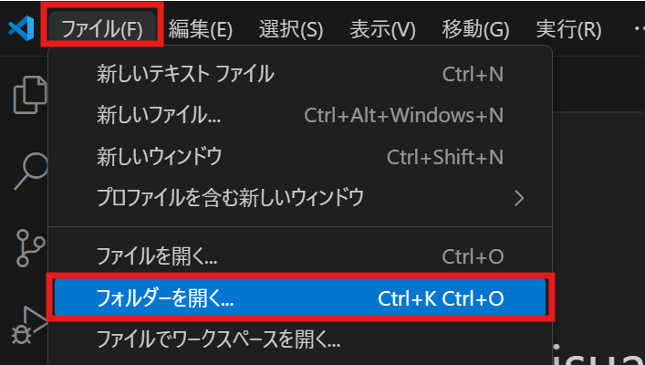

winget install Microsoft.VisualStudioCodeVSCodeの使い方
VSCodeとは
Visual Studio Code (以下VSCode)は、エディタ（ソースコードを書くためのソフト）の一種です。以下のような特徴を持つことから、現在幅広く使われています。
- Windows、macOS、Linuxなど、環境を問わず無料で利用可能
- txtはもちろん、R、Python、C++、md、htmlなどほとんどの言語・ファイル形式に対応
- プログラムの記述、実行、デバッグ、ソースコード管理なまで、一通りの機能がそろっている
- 拡張機能をはじめ、カスタマイズ性が高い
- 軽量で、動作が非常に高速
このページでは、Visual Studio Codeのインストールから簡単な使い方まで、一通り解説します。
インストール
公式Webサイトからインストーラーをダウンロードしてきてもよいですが、以下のようなwinget（Windows）あるいはbrew（macOS）を使ったインストールが簡単です。
スタートメニューでPower Shellと検索し、出てきたアプリを実行してください。開いた画面で、以下のコマンドを入力し、最後にエンターキーをおしてください。

homebrewをインストール後、ターミナルで以下のコマンドを入力し、最後にエンターキーをおしてください。
brew install --cask visual-studio-code
Note
上手くいかなければ、以下のWebサイトからもインストール可能です。
https://code.visualstudio.com
上手くインスト―スできれいれば、Power Shell、またはターミナル上で以下のコマンドを入力し、最後にエンターキーを押すことで、VSCodeが立ち上がるはずです。
code
もちろん、スタートメニュー（Windows）やアプリ一覧から開いてもかまいません。
日本語化
デフォルトでは英語表示なので、日本語化しましょう。左側のメニューから拡張機能ボタン（4つの四角マーク）を選びます。検索窓でJapaneseを検索し、出てきた一番上のJapanese Language Pack for Visual Studio Codeのinstallボタンをクリックします。

すると、右下に言語設定を変えて再起動するか尋ねてくるポップアップが出るので、青いボタンを押します。 
これで、表示が日本語に切り替わったはずです。
Note
上記でうまく日本語化できない場合、Japanese Language Pack for Visual Studio Codeのインストール後、VSCode上部の検索窓に 「> display」と入力し、出てきた候補から「Configure Display Language」を選択し、日本語を選んでみてください。 
使用方法
ファイルの表示
VSCodeは、通常フォルダ（ディレクトリ）を単位として開きます。これは、プログラミングでは複数のファイルを同時に扱うことが多いためです。
上部メニューの「ファイル」から「フォルダーを開く」を選択し、目的のフォルダを選択することでそのフォルダを開くことができます。

Note
初めて開くフォルダでは、以下の画像のような警告画面が表示されることがあります。自分で作成したフォルダや、信頼できる場所からダウンロードしたファイルの場合は、気にせず「はい、作成者を信頼します」を選んでください。「いいえ」を選んだ場合、プログラムの実行等が制限されます。
なお、「はい」の上部にある「親フォルダ・・・内のすべてのファイルの作成者を信頼します」にチェックを入れると、以後その親フォルダ内（つまり開いたフォルダの一つ上の階層のフォルダ内）にあるファイル・フォルダを開く場合は警告が表示されなくなります。
ここでは、「古典集」というサンプルフォルダを開いてみます。このサンプルを試してみたい場合は、以下からzipファイルをダウンロード後、中にある「古典集」というフォルダを適当な場所においてから開いてみて下さい。
画面全体の構成は以下のようになっています。

- メニューバー：フォルダを開いたり、表示設定、細かい編集操作に使用。画面幅が狭いと省略され「≡」と単一ボタンとなっていることもある。
- アクティビティバー：主要なツールへのアイコンを表示。
- サイドバー：アクティビティバーで選択しているツールの内容を表示。
- メイン画面：開いたファイル等はここにタブ形式で表示。
- ステータスバー：ファイルについての情報等を表示
アクティビティバーの一番上、ファイルマークのアイコンが、「エクスプローラ」ツールです。このツールは、サイドバーに開いたフォルダ内にあるファイル・フォルダ一覧を表示します。サイドバー上部には、現在開いているフォルダ名（この例では「古典集」）が表示されます。

ファイルをクリックすると、メイン画面にそのファイルが開きます。ワンクリックだと

これらのファイル・フォルダの配置は、実際のフォルダ内の階層構造と一致しています。

この画面からは、おおよそのファイル操作を行うことができます。 - ファイル名をクリック&ドラッグで移動させると、ファイルの位置も移動します- 名前の変更・ファイルの削除も、ファイルを右クリックしたメニューから行えます
名付けたフォルダを新たに作成し、開いてみます。Windowsの場合、右クリックから「新規作成」→「フォルダ」の順で選び、作成したフォルダを選択した状態で「フォルダを選択」を押します。


上手くいけば、左サイドバーに KOTEN とフォルダ名が書かれているはずです。 
ファイルを比較する
検索、置換
おすすめの設定
最後に、使いやすくするための細かい表示設定を紹介します。これらの設定は好みの問題なので、必ずしも設定する必要はありません。実際に使ってみながら、検討してみてください。
ミニマップ